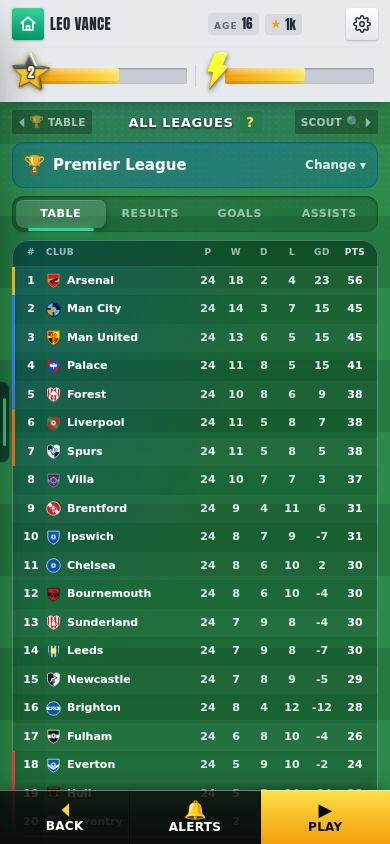
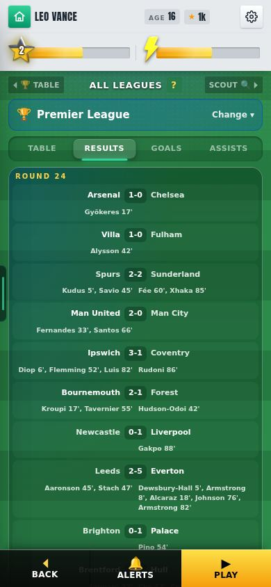
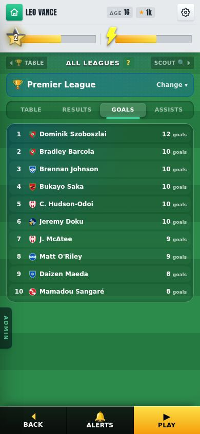
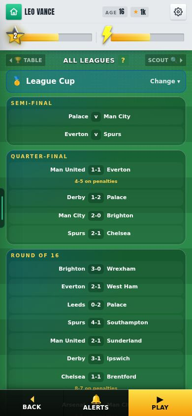
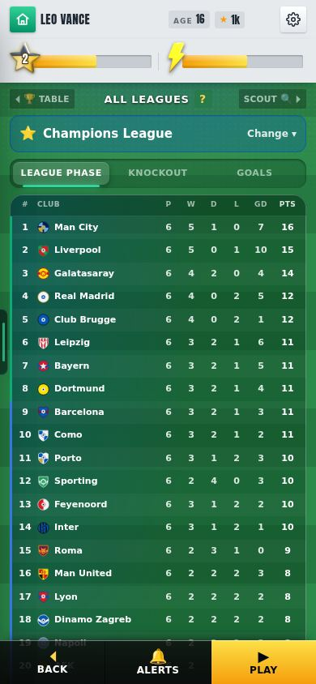
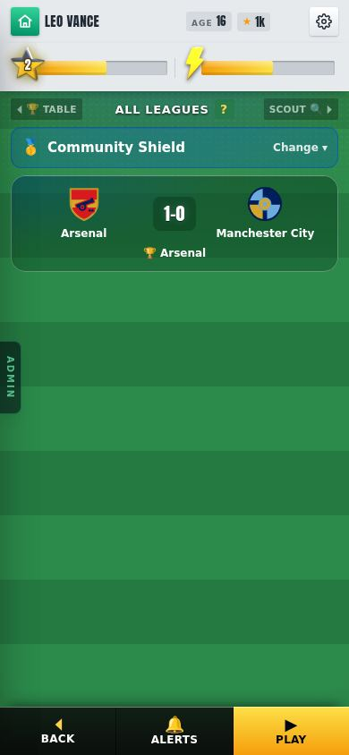
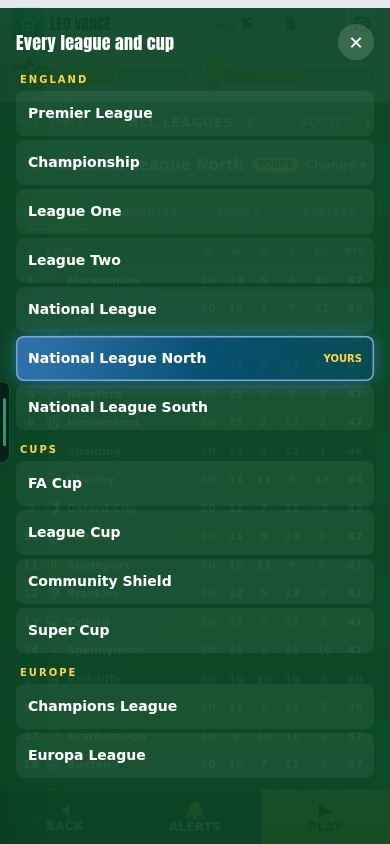

19 October 2026 · branch Mikey, not live yet · since v0.17: every league and cup in the world is played for real, plus two transfer talk fixes · tests: all 40 season tests pass; the same 7 match tests fail as before this round
7 leaguesevery English league played week by week, not only yours
58%Arsenal's title chance (rating 87). Relegated: 0 in 2,000 seasons
34% → 8%a League Two club beating a Premier League club in a cup
~2 msextra per week of play (whole world season: ~95 ms)
Check these
League → arrows → 🌍 All leagues: every table, its results, top scorers and assists
All leagues → Change: the FA Cup, League Cup, Community Shield, Super Cup, Champions League and Europa League
Season Awards → "🌍 Every league and cup": the whole season just finished
Season 1 pre-season: Arsenal v Man City and PSG v Aston Villa
End of a season: who goes up and down matches the final tables
Transfer talks: a smaller club now offers its own wage
1 · The world season: every league and cup is played
Before: only your own league was really played. Other leagues, the Champions League and the Europa League were decided by one weighted dice roll at the end of the season. Now they are all played match by match, on their real dates, as you play.
Every club gets a real rating
A club with a real squad is rated on its best eleven. A club with no real squad starts from its league's level (Premier League 78 … Step 3 50) and moves up to 4 points for reputation, history and spending. The same rating is used in the leagues, the cups and Europe. measured
Every English league is played week by week
Before: other leagues had no table until the season ended. Now all seven leagues play each round on its real date, with named scorers. In 2,000 test seasons with real ratings, Arsenal (87) won 58% of titles and were never relegated. Coventry, Hull and Ipswich usually went down. measured

Premier League table, end of January: 24 games played

Results with scorers, round 24

Top scorers
Promotion and relegation come from the tables
Before: who went up was a weighted draw by strength. Now the bottom clubs go down and the top clubs go up, as the tables say, plus real play-offs (National League North and South use their 2nd–7th format). measured
Cups use the real ratings
Cup ties now use the league's match model, not a flat one. A League Two club beating a Premier League club: 34% → 8%. The League Cup is played even when you are not in it (National League and below). measuredseen

League Cup played without you: quarter-finals done
The Champions League and Europa League are played in full
36 clubs each, eight league-phase games on the real European dates, then UEFA's knockout bracket to the final. Fixed: an English club that was never in the field could win it (17.5% of Europa League winners). England's entrants now come from last season's real Premier League table. measuredseen

Champions League league phase, end of January: 6 of 8 games
Community Shield and Super Cup every season
Season 1: Arsenal v Man City, and PSG v Aston Villa. After that, last season's real winners. seen

Community Shield, season 1: Arsenal 1-0 Man City
A new screen to see it all
League screen → 🌍 All leagues. "Change" opens every league, cup and European competition. Leagues have Table, Results, Goals and Assists. Europe has League phase, Knockout and Goals. At the end of a season, Season Awards → "🌍 Every league and cup" keeps the whole season to look back on. seen (the end-of-season screen: not yet seen)

Change: every league and cup
Lag: about 2 ms a week
Measured on this computer: one week of the world takes about 2 ms (median), and a whole season about 95 ms. The save grows by about 85 KB. If it ever lags on a phone, one switch plays the world only at the season's end instead, with the same tables. measured (on a phone: not yet seen)
2 · Transfer talks
A smaller club offers its own wage
Before: a club from a lower league often dropped out because your wage was above what it could pay. Now each club offers a wage from its own money and how much it wants you, and stays in the talks. measured
The + and − steps fit the amount
Before: ★500 a step on a wage of about ★400. Now: ★10 a step there. "You're asking" no longer shows before you ask. The offer box starts at their offer and can be cleared and retyped. measured
Known issues
Not yet seen on a phoneLOW
The All leagues screen was checked in a test browser at phone size. The end-of-season screen and the speed on a real phone were not checked.
The leagues slowly get strongerLOW
Still open from v0.17: replacements grow on Leo's numbers (Premier League first-team average 78.8 → 83.1 by season 21).
Next
How replacements grow (Mikey's own plan)
Tapping a club in a table to see its squad
Previous versions
v0.17 · 2026-10-18 · The new transfer window (clubs come to you, season letters S to D), the world ages (decline from 31, retire 35–41, replacements), real kits for 211 nations, 1–2 post-match videos
v0.16 · 2026-10-13 · Gameplay review: fewer feed videos that wait for ▶, upright goal posts, achievements unlock and level you up at once; test switches for new framing and headers/volleys
v0.15 · 2026-10-13 · International football: call-ups, duty mode, watching on TV, scorers for every goal; the Ballon d'Or counts club and country (Star Man out); casino scandals; name banks for 211 nations
v0.14 · 2026-10-09 · Real Premier League shots playable as test chances; Chances (testing): about 9 Kane-style highlights a match, Old still the default
v0.13 · 2026-10-08 · Play-off, cup and European round-ups with animated brackets; the real UEFA knockout; two-legged League Cup semis; ±25% wage when your club goes down or up; relegation day
v0.12 · 2026-10-08 · The ovation's hugs, dap-ups, pat and claps made in Blender; the farewell's 3D ovation checked in a real match
v0.11 · 2026-10-08 · 3D standing ovation; centre-back Golden Boot and day-one line-ups fixed; more assists; clearances, negotiations and Relations reworked
v0.10 · 2026-10-04 · Relationships rebuilt: bars that move slowly, one game per relationship, happiness decides recovery, no Sponsors bar; injuries switched off
v0.9 · 2026-10-03 · XP rebuilt (slower start, XP by the minute, no double pay) and the XP Book to edit every amount; 3D garden, North/South 2026/27, Club Data
v0.7 · 2026-09-30 · A new 1-10 star career rating separate from overall, 7 boots, dearer Style, 2 training sessions a week, restyled training, contract terms
v0.6 · 2026-09-27 · Five levels of every boot and lifestyle item, a moving ball on the strike screen, commentary that barely repeats, new chants
v0.5 · 2026-09-26 · How you get picked: win your shirt from a better-rated rival, form over 3 games, subs when the score says, cup rotation
v0.4 · 2026-09-25 · Training rebuilt the New Star Soccer way: 30 fixed levels, three tries, stars raise the skill; pace, vision and free kick matter in matches
v0.3 · 2026-09-25 · What you see on the pitch matches where people stand: nearer players and the ball drawn right, corners from the flag; trophy pictures, instant energy modes, feed likes
v0.2 · 2026-09-22 · Energy master plan: in-match energy modes, a real ticking clock, half-time KIB cans, rest days, tougher fatigue rules
v0.1 · 2026-09-21 · Economy, fame and reputation rebuild: Premier League wages to ★100k, fame levels, one reputation number, 50-season careers